-
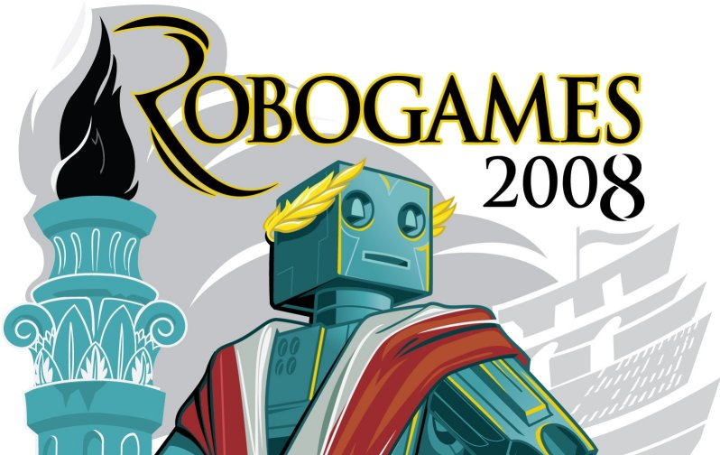
Robogames 2008, San Francisco
AcYut secured the 6th place
June 13-15, 2008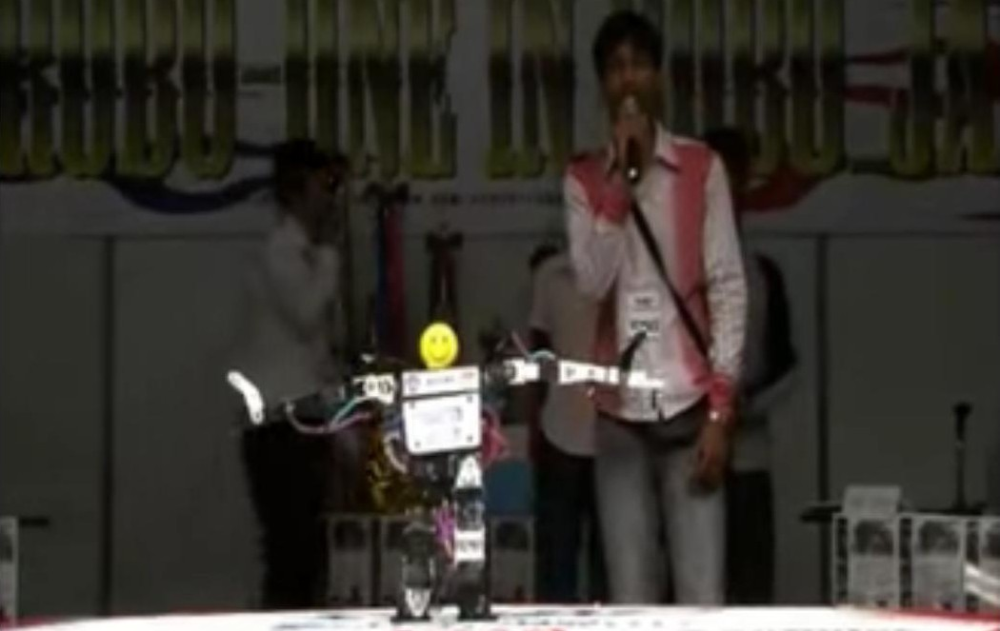RoboOne 2008, Japan
AcYut participated in the annual competition for biped humanoid robots.
October 11-12, 2009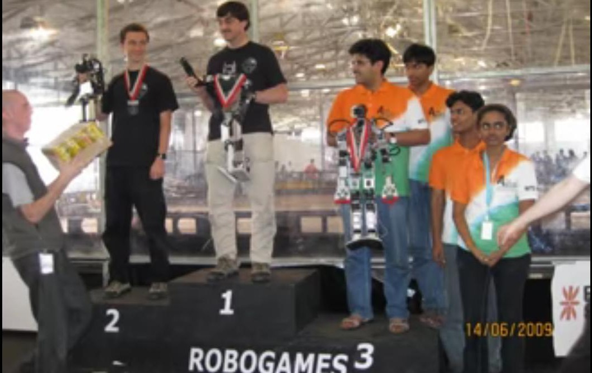Robogames 2009, San Francisco
Bronze medal in the middle-weight humanoid combat category
June 12-14, 2009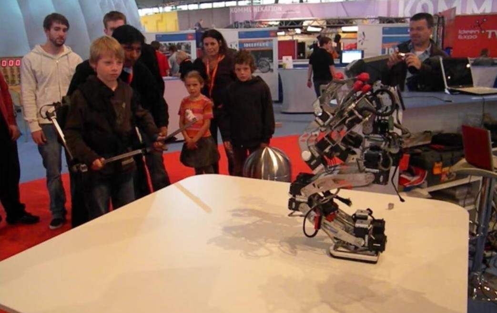Ideen Expo 2009
Invited to Germany. The team met Mr. Christian Wulff, the Chief Minister of the State of Niedersachsen, Germany. AcYut even featured in a live chat show on the German National Television!
September 5-7, 2009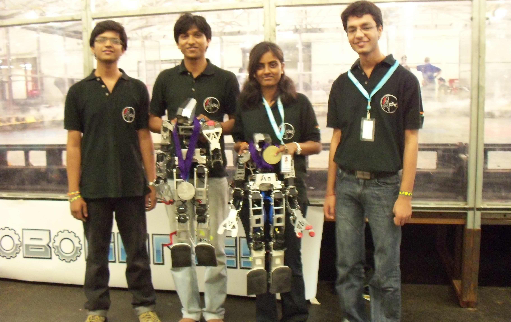Robogames 2010, San Francisco
AcYut won 4 medals : 1 gold, 2 silver and 1 bronze!
March 16, 2010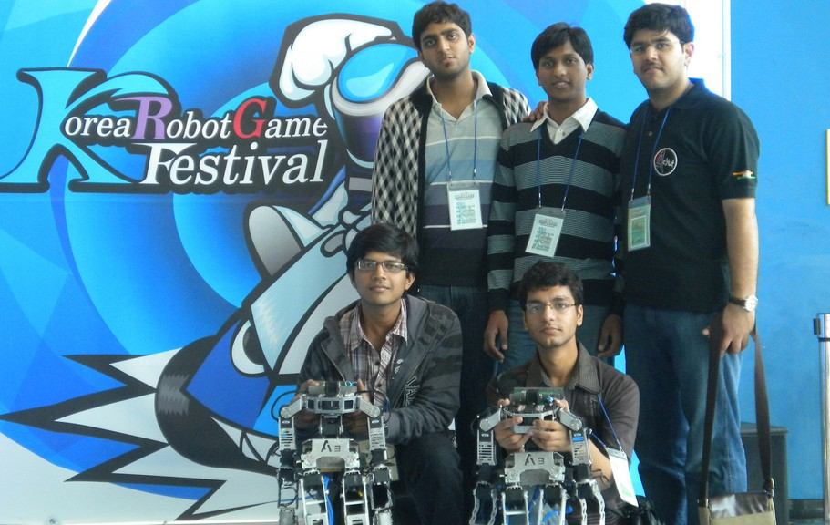Korea, 2010
AcYut took part in the Korea Robotics Festival and the International Robotics Challenge. Fully armed with a variety of moves, AcYut took opponents by surprise in a kung-fu match! Also, the team secured a permanent invitation to the event.
October 28-31, 2010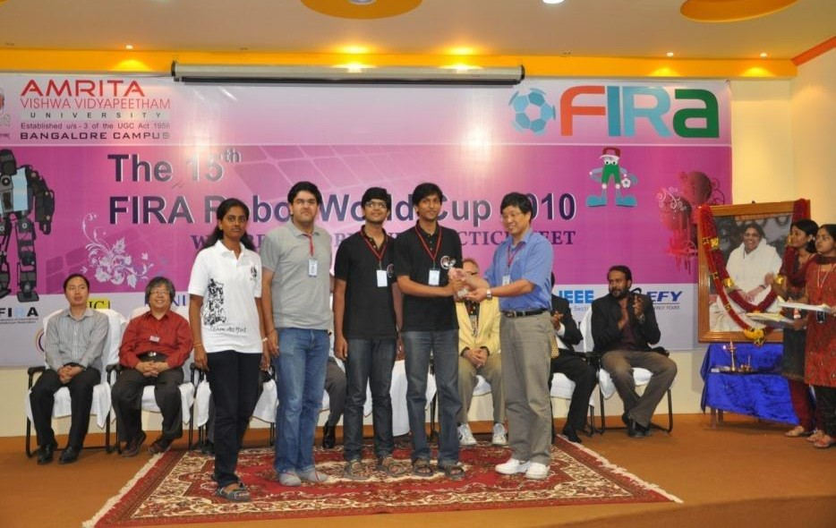FIRA 2010, Bangalore
AcYut set a new World Record for the most weight lifted by a humanoid (40 CDs)!
September 15-19, 2010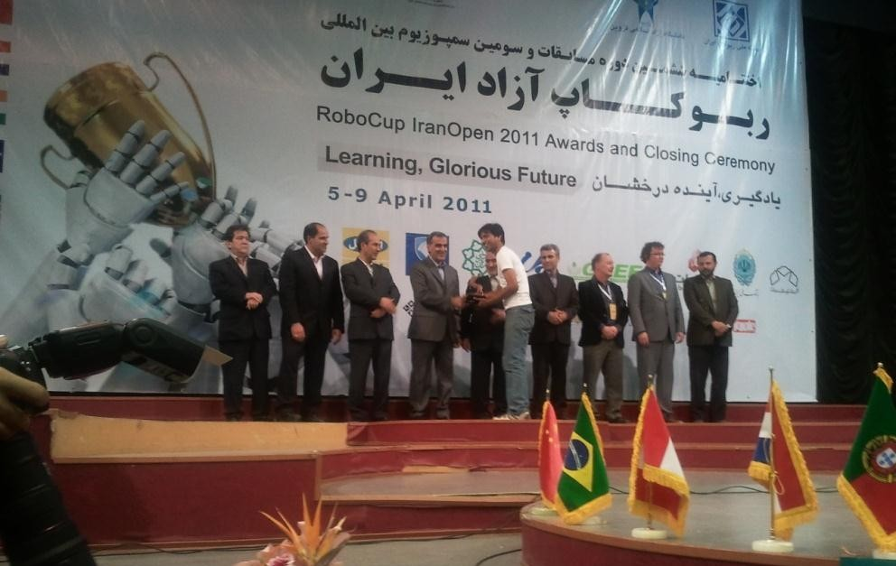Iran Open RoboCup 2011
AcYut won a special award for the best performance in the teen-sized humanoid league.
April 5-9, 2011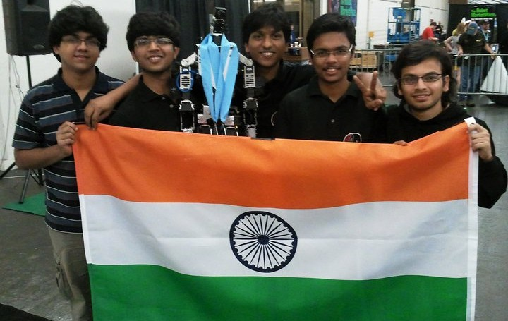Robogames 2011, San Mateo, California
Acyut won two Silver Medals
April 14-17, 2011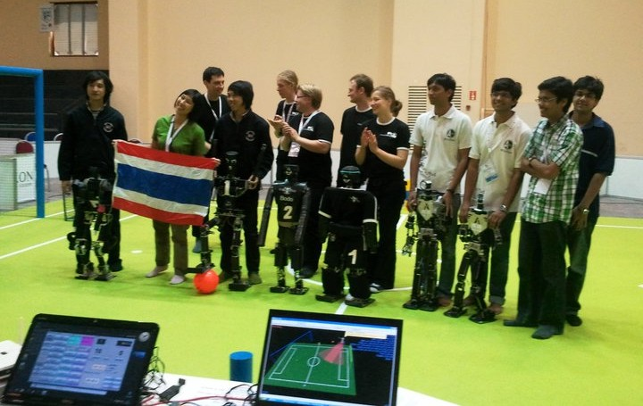RoboCup 2011, Turkey
3rd Place in the Autonomous Teen Size Category
July 2011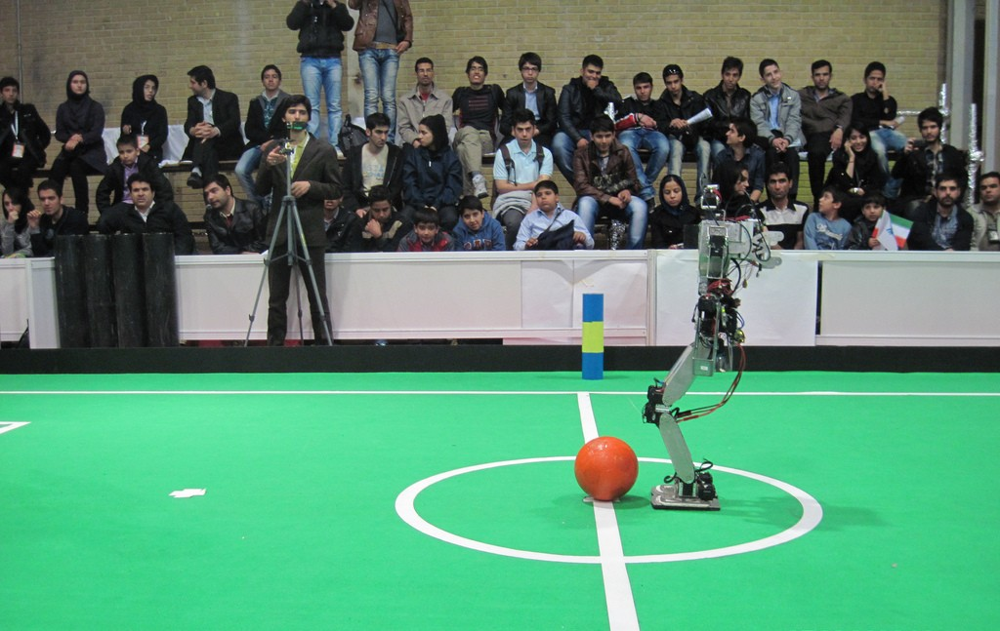Iran Open RoboCup 2012
3rd place in the humanoid teen-sized league
April 3-7, 2012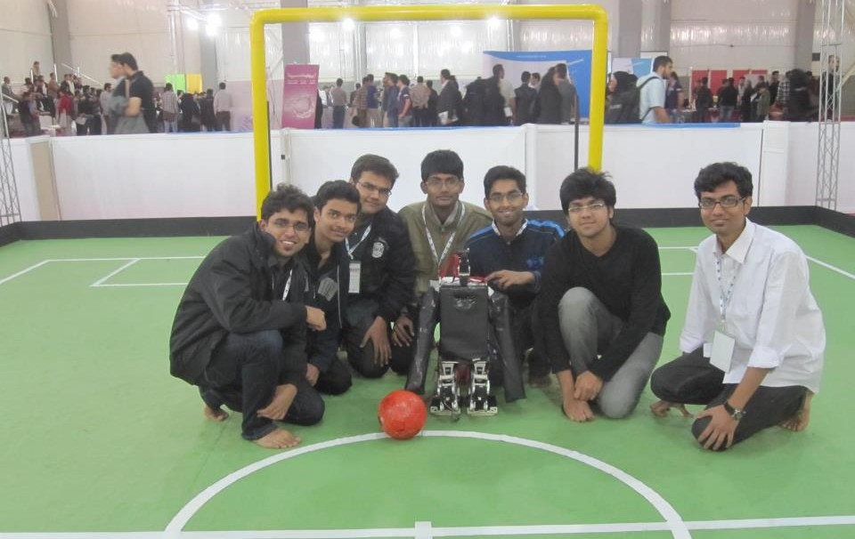Iran Open RoboCup 2013
2nd Place in the humanoid teen-sized league
July, 2013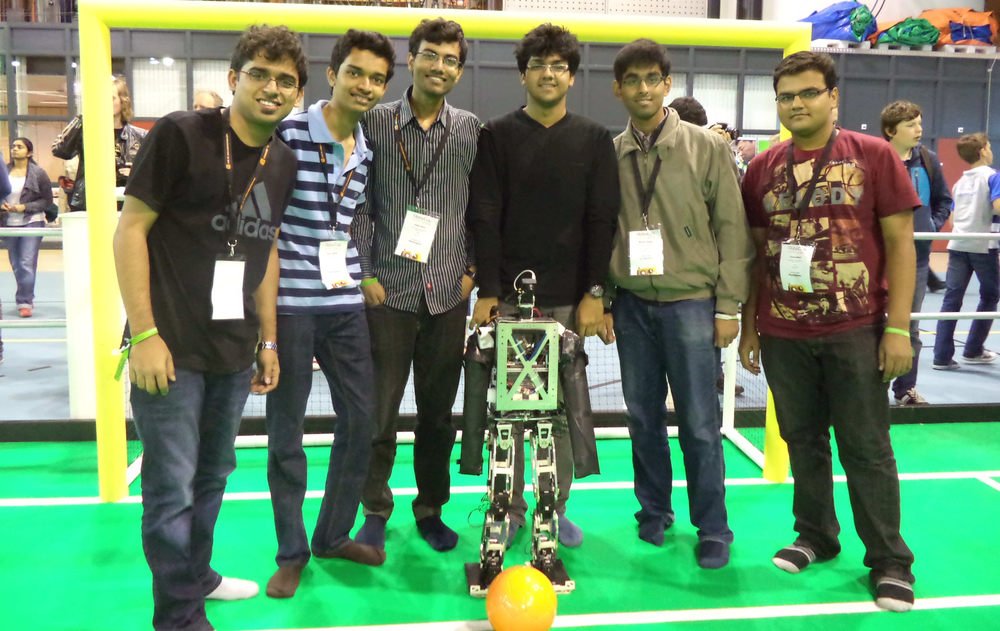RoboCup 2013, Eindhoven, Netherlands
4th Place in humanoid teen-sized league
June 27-30, 2013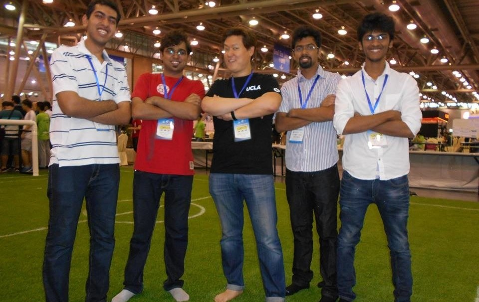RoboCup 2015, Hefei, China
6th place in humanoid teen-sized league
July 19-22, 2015Other Achievements
- Inspected and highly appreciated by former President of India, Dr. A.P.J. Abdul Kalam, on February 9th 2009, at 'Quark', the annual Technical Festival of BITS Pilani, Goa Campus
- Conducted demonstrations at :
- Carnegie Mellon University, Pittsburg, USA
- Stanford University, California, USA
- New York Polytechnic College, USA
- Indian Institute of Science (IISc), Bangalore, India
- Indian Institute of Technology (IIT), Delhi, India
- Indian Institute of Technology (IIT), Bombay, India
- Techkriti 2013, Indian Insitute of Technology (IIT), Kanpur, India
- ABU RoboCon 2010, Pune, India
- Birla Institute of Technology and Science (BITS), Hyderabad, India for a demonstration in January 2014
- Birla Institute of Technology and Science (BITS), Dubai, UAE for 'Enginuity 2011', their technical festival
- Tathva 2010, the technical festival of NIT Calicut
- Hannover Milano India Innovation Initiative National Fair in 2012 and 2014
- Bhaba Atomic Research Centre (BARC), Mumbai, India
- Delhi Public School, RK Puram, New Delhi, India
- Bishop Cottons Boys School, Bangalore, India

AcYut - meaning 'The Imperishable' in Sanskrit, is the name of the series of humanoids being developed at the Centre for Robotics and Intelligent Systems by a team of undergraduates under the guidance of Dr. B.K. Rout at the Birla Institute of Technology and Science, Pilani, India.
Useful Links
Centre for Robotics and Intelligent SystemsContact Us
Birla Institute of Technology and Science
Pilani, Rajasthan, India - 333031
Email: contact@acyut.com2016 © All Rights Reserved.